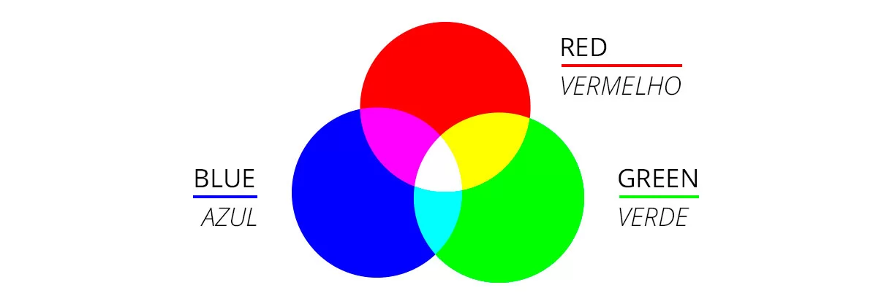
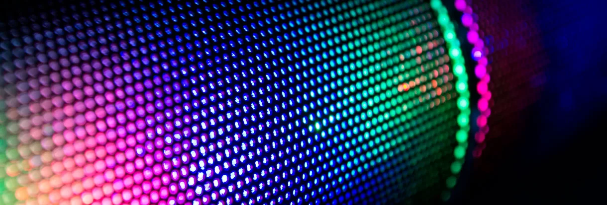
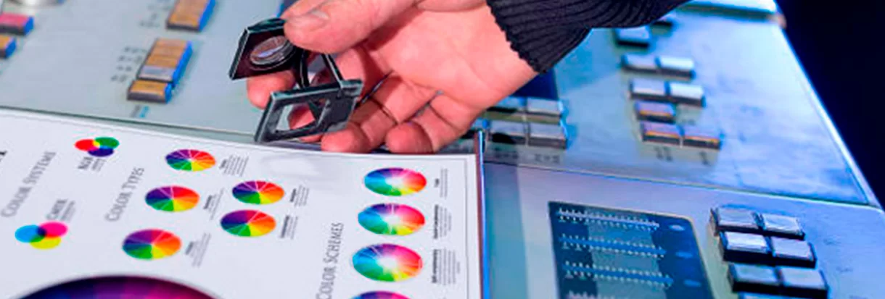

O QUE SIGNIFICA RGB? TUDO SOBRE ESSE SISTEMA DE CORES!
As cores estão presentes em diversos aspectos de nossas vidas e afetam os mais variados segmentos, desde a indústria, moda, arquitetura, tecnologia e claro, principalmente, a comunicação visual, não é mesmo?
Por isso, entender como funcionam as cores e a forma correta de aplicá-las é importante para profissionais de diferentes cargos e segmentos.
E para começar a entender mais sobre as cores, o primeiro passo é entender as diferenças entre os três principais sistemas de cores. Por isso, neste artigo, vamos abordar tudo sobre o Sistema RGB. Confira!
O que Significa RGB?
"RGB" é a abreviatura do sistema de cores aditivas formado pelos tons de Vermelho (Red), Verde (Green) e Azul (Blue). O propósito principal do sistema RGB é a reprodução de cores em dispositivos eletrônicos como monitores de TV, computadores, mídias digitais, celulares em geral.
Tradicionalmente é um padrão de cor que utiliza-se de luz para gerar cores, nossos monitores por exemplo são compostos por diversos pontos e esses são chamados de pixels. Cada pixel possui cada uma dessas três cores, e sua junção resulta em diversas outras que compõem a imagem.
saiba maisOs Pixels e as Combinações do RGB
O pixel é a menor unidade de uma imagem digital. Aliás, esse termo vem da contração da expressão “picture element” que significa “elemento da imagem”, em inglês). Ou seja se visualizarmos uma imagem com alto índice de aproximação, é possível identificar pequenos quadrados coloridos nela, que, somados, formam o desenho completo. Em uma foto digital por exemplo, verá que ela é formada por vários quadradinhos – os pixels.
A cor de cada pixel é fruto da combinação das cores básicas: vermelha, verde e azul citadas acima onde cada uma dessas três cores possui 256 tonalidades, da mais clara à mais escura, que, combinadas, geram mais de 16 milhões de possibilidades de cores.
Os pixels são agrupados em linhas e colunas para formar uma imagem. As cores Vermelho (Red), Verde (Green) e Azul (Blue) conhecidos no mundo das artes como “cores primárias”, já que se combinam baseadas na reflexão e absorção de fótons (minúsculas partículas elementares contidas na luz) visto que o RGB depende da emissão de fótons de um componente excitado a um estado de energia mais elevado.
Acima citamos que o a cor RGB era uma cor que refletia luz, ou seja, se projetarmos o azul, verde e o amarelo, e que a sobreposição dessas cores irão resultar em cores primárias e a sobreposição das três juntas resultam o branco.
O Sistema RGB é usado dispositivos com telas, como por exemplo, esse que você está utilizando no momento para ler este artigo. As cores obtidas neste sistema é através de uma escala que vai de 0 a 255, quando todas estão nesse máximo o resultado é a manifestação da cor Branca. Assim ocorre no processo inverso, quando todos os valores estão no menor valor , o resultado é a cor preta.
Quando utilizar o Sistema de Cores RGB?
Antes de mais nada você precisa ficar bastante atento a finalidade do material que está produzindo. O RBG não deve ser utilizado para materiais impressos devido a grande variação de cor entre o que é percebido no monitor e o que é impresso. Dessa maneira , se o objetivo do seu trabalho será produzir uma peça física (como um folder, rótulo, placa de sinalização, painel, etc.) qualquer que seja a superfície de impressão, é importante sempre manter o modo de seu documento como CMYK.
Para garantir uma boa resolução, certifique-se de que o arquivo eletrônico possui o modo de cor nos tons de CMYK. Imagine o seguinte exemplo, você observa uma arte de um documento específico, foto ou convite que está linda no computador, com tonalidades bem vivas e harmoniosas, entretanto no momento de imprimir as cores saem completamente diferentes, gerando desconforto e muitas dúvida da qualidade. Possivelmente se você tenta imprimir seus arquivos gráficos com baixa qualidade e em tons de cor incorretos vai acabar tendo como resultado algo semelhante a isso, ou seja, imagens embaçadas e sem qualidade de cor. Certamente não é isso que você quer nem para você e nem mesmo para seu cliente não é mesmo?
RGB e CMYK
Para saber qual o padrão de cor mais indicado para se optar, basta levar em conta qual a finalidade do material e onde ele será utilizado. O designer responsável pelo projeto gráfico deve sempre avaliar as especificações técnicas e adequar o material ao sistema de cor mais adequado.
Em linhas gerais, o padrão de cor CMYK é o mais utilizado para materiais impressos, enquanto que para projetos na web, o padrão costuma ser o RGB.
Portanto, lembre-se: não são todas as tonalidades de cores que, ao serem transferidas do computador, terão o mesmo tom visualizado. É preciso ficar atento a estas variáveis antes de fechar o arquivo e enviá-lo para impressão.
A união de todas as cores no RGB vai gerar a luz branca em um monitor, por exemplo. Contudo, no sistema CMYK, quando usamos todas as cores chegamos ao preto. Sendo assim, não é possível gerar a tinta branca a partir do CMYK. Quando se deseja o branco no sistema CMYK, utiliza-se papel branco e ausência de cor.